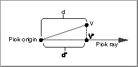
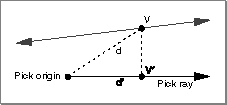
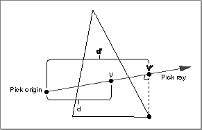

About Pick Objects
Picking is the process of identifying the objects in a view that are close to a specified geometric object. You might, for example, want to determine which objects in a view, if any, are sufficiently close to a particular ray. You'll use picking primarily to allow users to select objects in a view. Picking thereby provides the foundation for user interaction with three-dimensional models. You can, however, use picking for other purposes. You might, for example, use picking to determine which objects in a model are visible from a particular camera location.Screen-space picking (or window picking) involves testing whether the projections of three-dimensional objects onto the screen intersect or are close enough to a specified two-dimensional object on the screen.
QuickDraw 3D returns information about the picked objects as they are defined in three-dimensional space. For example, you might want to know the distance of a picked object from some point. The distance reported by QuickDraw 3D is always a three-dimensional world-space distance, not a two-dimensional screen-space distance.
You perform a picking operation by creating a pick object (or, more briefly, a pick). QuickDraw 3D provides a variety of routines that you can use to create pick objects, depending on the desired picking method. For example, you can call
Q3WindowPointPick_Newto create a pick object that selects objects in a view whose projections onto the screen are close enough to a particular point. The geometric object used in any picking method is the pick geometry.To get the objects in the model that are close to the pick geometry, you must specify the entire model. The code you use to do this is similar to the rendering loop you use when drawing a model and therefore is called the picking loop. (A picking loop is a type of submitting loop.) In a picking loop, however, instead of drawing the model, you pick the model by calling routines such as
Q3DisplayGroup_Submit. See Listing 15-1 on page 15-11 for code that illustrates a picking loop.Once you've completely specified the model within a picking loop, QuickDraw 3D can return to your application a list of all objects in the model that are close to the pick geometry. This list is the hit list. You can search through the returned hit list for individual items and obtain information about those items. You can also specify an order in which you want the items in the hit list to be sorted, and you can indicate in advance the kinds of objects you want QuickDraw 3D to put into the hit list. For example, you can indicate that you want QuickDraw 3D to put only entire objects into the hit list or that you want QuickDraw 3D to put only parts of objects (that is, its component vertices, edges, or faces) into the hit list.
Types of Pick Objects
A pick object is of typeTQ3PickObject, which is one of the basic types of QuickDraw 3D object. QuickDraw 3D defines several subtypes of pick objects, which are distinguished from one another by the pick geometry.QuickDraw 3D provides two types of screen-space pick objects: window-point pick objects and window-rectangle pick objects. These pick objects test for closeness between the pick geometry (a point or rectangle in a window) and the screen projections of the objects in the model. In general, you'll use one of these two screen-space pick objects when using picking as the basis of user interaction.
- Note
- There are many optimizations that can be used to determine whether an object in a model is suitably close to a pick geometry without having to perform all the projections that otherwise would be required. QuickDraw 3D uses these optimizations whenever appropriate.

Hit Identification
Once you have created a pick object and specified the model within a picking loop, QuickDraw 3D determines which, if any, of the objects in the model are suitably close to the pick geometry specified in the pick object. QuickDraw 3D uses hit-tests that are appropriate to the specific pick object and the objects in the model being tested. For example, if you're using a window-point pick object and your model contains a triangle, QuickDraw 3D tests whether the pick geometry--a point--is inside the two-dimensional screen projection of the triangle. If it is, QuickDraw 3D adds the triangle to the hit list.For some pick geometries, QuickDraw 3D allows you to specify two tolerance values, which indicate how close a pick geometry must be to an object in a model for a hit to occur. A pick object's vertex tolerance indicates how close two points must be for a hit to occur. A pick object's edge tolerance indicates how close a point must be to a line for a hit to occur. Edge and vertex tolerances are used only with one- and two-dimensional pick geometries.
Table 15-1 lists the hit-tests that QuickDraw 3D uses for window-space pick objects. The tolerances for these picks are floating-point values that specify units in the window coordinate system. QuickDraw 3D adds an object in a view to the hit list if the specified condition is fulfilled.
- IMPORTANT
- If the view within which picking is occurring is associated with a pixmap draw context, you need to transform the window-space pick coordinates (usually obtained from the mouse coordinates) to the pixmap's coordinate space. You can use original QuickDraw's
MapPtfunction to do this.Hit Sorting
In some cases, you can have QuickDraw 3D sort a hit list before returning it to your application. The sorting is based on either increasing or decreasing distance from some point, the pick origin. As a result, hit-list sorting is possible only when the pick geometry has a clearly defined pick origin. Pick objects whose pick geometries have a pick origin are called metric pick objects (or metric picks). Window-point picking uses metric pick objects. With window-rectangle pick objects, however, there is no clearly defined pick origin. As a result, window-rectangle pick objects are not metric: you cannot have the hit list sorted by distance.With a metric pick, distances are measured along the ray from the pick origin to the point of intersection on the picked object. If that ray intersects a picked object more than once, QuickDraw 3D always returns the hit that's closest to the pick origin.
Recall that you can have QuickDraw 3D put either entire objects or parts of objects into a hit list. When you are hit-testing parts of objects--vertices, edges, and faces--you need to keep in mind that the tolerance values can complicate the process of calculating distances (and hence the process of sorting hits). For example, a window point might be equally distant from both a vertex and an edge, at least within the tolerance values associated with the window-point pick object. To establish a unique sorting order in such cases, QuickDraw 3D gives priority to vertices, then to edges, and finally to faces.
Note that the distances used to establish a sort order might not be the same distances reported to your application when you retrieve hit information. Consider, for example, the situation illustrated in Figure 15-1. Here, the vertex V is within the current vertex tolerance of the world ray pick object and therefore qualifies as a hit. QuickDraw 3D uses the distance d' from the pick origin to the closest point on the pick ray (that is, V') as the basis for sorting vertex V in the hit list. However, when reporting the distance from the pick origin to the picked vertex V, QuickDraw 3D gives the actual distance d.
Figure 15-1 Determining a vertex sorting distance

QuickDraw 3D calculates distances to edges and faces in an analogous manner. If the pick ray passes within the current edge tolerance of an edge, the sorting distance is set to the distance d' from the pick ray origin to the projection onto the pick ray of the point on the edge that is closest to the pick ray. See Figure 15-2.Figure 15-2 Determining an edge sorting distance

If the pick ray intersects a face, the sorting distance is set to the distance from the pick ray origin to the projection onto the pick ray of the face vertex that is closest to the pick ray. See Figure 15-3.Figure 15-3 Determining a face sorting distance

- Note
- The sorting distance d' is not always less than the actual distance d to the hit object. In Figure 15-3, for example, d' is greater than d.
Hit Information
When you create a pick object, you specify (in themaskfield of a pick data structure) a hit information mask value that indicates the kind of information you want returned about objects in the model. For example, you could use this code to request information about surface normals and the distance from the pick origin:TQ3PickData myPickData; myPickData.mask = kQ3PickDetailMaskNormal | kQ3PickDetailMaskDistance;Once you've created the hit list, you can obtain information about a particular hit in the list by calling theQ3Pick_GetHitDatafunction. You pass this function a pick object and a pointer to a hit data structure. A hit data structure is defined by theTQ3HitDatadata type.typedef struct TQ3HitData { TQ3PickParts part; TQ3PickDetail validMask; unsigned long pickID; TQ3HitPath path; TQ3Object object; TQ3Matrix4x4 localToWorldMatrix; TQ3Point3D xyzPoint; float distance; TQ3Vector3D normal; TQ3ShapePartObject shapePart; } TQ3HitData;QuickDraw 3D fills in fields of the structure you pass it and sets the
- Note
- See "Hit Data Structure" on page 15-22 for complete information about the fields of a hit data structure.
validMaskfield to indicate which of the fields are valid. Before reading any information from the fields of a returned hit data structure, you should checkvalidMaskto see what information QuickDraw 3D has returned. The values in themaskfield of a pick data structure and thevalidMaskfield of a hit data structure can differ.You need to pay attention to what information is returned in part because some kinds of information are not available for some combinations of pick object types and picked object types. For example, you cannot get information about a surface normal for a hit on a point (because points do not have normals). Similarly, you cannot get a distance value for a window-rectangle pick object (because rectangles have no origin from which to measure). Table 15-2 indicates the kinds of information you can receive about each type of picked object.
- IMPORTANT
- QuickDraw 3D can always return information in the
pickID,path,object, andlocalToWorldMatrixfields. As a result, those fields are omitted from Table 15-2.